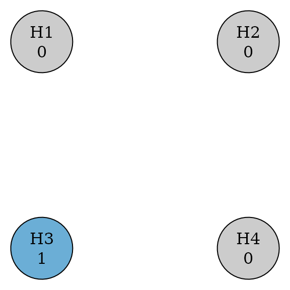

Introduction
A multiple comparison procedure (MCP) is a statistical analysis method that allows for assessing the efficacy of multiple endpoints, some of which are dependent on each other, in a single clinical trial. Endpoints can be different doses, treatment of different conditions, combined superiority & non-inferiority testing, or many others. A key feature is that MCPs strongly control the type-I error rate at level alpha.
In (Bretz et al. 2011), a graphical method for MCPs is described, which separates the weighting of the clinical endpoints from the particular statistical test used to assess each endpoint. A graphical approach can also be helpful for communicating study design to clinical teams. This package is a low-dependency implementation of those methods.
Basic usage
Initial graph
The base object in graphicalMCP is an initial_graph,
which is a weighted, directed graph represented by a matrix of
transition (edge) weights, and a vector of hypothesis (vertex)
weights.
library(graphicalMCP)
# A graphical multiple comparison procedure with two primary hypotheses (H1
# and H2) and two secondary hypotheses (H3 and H4)
# See Figure 1 in Bretz, F., Posch, M., Glimm, E., Klinglmueller, F., Maurer,
# W., & Rohmeyer, K. (2011). Graphical approaches for multiple comparison
# procedures using weighted Bonferroni, Simes, or parametric tests. Biometrical
# Journal, 53(6), 894-913.
hypotheses <- c(0.5, 0.5, 0, 0)
transitions <- rbind(
c(0, 0, 1, 0),
c(0, 0, 0, 1),
c(0, 1, 0, 0),
c(1, 0, 0, 0)
)
hyp_names <- c("H1", "H2", "H3", "H4")
example_graph <- graph_create(hypotheses, transitions, hyp_names)
example_graph
plot(example_graph, vertex.size = 60)Update graph
Hypotheses can be deleted from the MCP using
graph_update(). Updated weights and transitions are
calculated according to the weighting strategy in Algorithm 1 of (Bretz et al. 2011). We distinguish
deleting from rejecting in [vignette(“glossary”)].
updated_example <- graph_update(
example_graph,
delete = c(FALSE, TRUE, TRUE, FALSE)
)
updated_example
plot(updated_example, vertex.size = 60)
Generate weights
The weights of all sub-graphs can be calculated with
graph_generate_weights(). This uses more efficient code
under the hood than graph_update() in order to be
performant for larger graphs.
graph_generate_weights(example_graph)More information on the closure can be found in [vignette(“generate-closure”)].
Test hypotheses
Bonferroni testing via the shortcut method is supported in
graphicalMCP. Such a test can be performed with
graph_test_shortcut(), which generates a report showing the
graph & test results. See more insight about why a hypothesis was
rejected or not by setting the verbose and
test_values flags. More details about shortcut testing can
be found in [vignette(“shortcut-testing”)].
graph_test_shortcut(example_graph, p = c(.01, .03, .02, .01), alpha = .025)A graph can also be tested using Simes- or parametric-based testing using the closure test. Other types of tests will be added over time, and a combination of tests can be used for groups of hypotheses. Additional details about closure testing can be found in [vignette(“closed-testing”)].
graph_test_closure(
example_graph,
p = c(.01, .03, .02, .01),
alpha = .025,
test_types = "bonferroni",
test_groups = list(1:4)
)Power simulations
It’s not always obvious from a graph structure how easy or difficult it will be to reject each hypothesis. One way to understand this better is to run a power simulation, where many p-values are simulated, and a graph is tested against each.
graph_calculate_power(
example_graph,
sim_n = 1e5,
power_marginal = c(.9, .9, .8, .8)
)All valid test types & hypothesis groupings are valid for power simulations as well. Power simulations are discussed further in both [vignette(“shortcut-testing”)] and [vignette(“closed-testing”)].